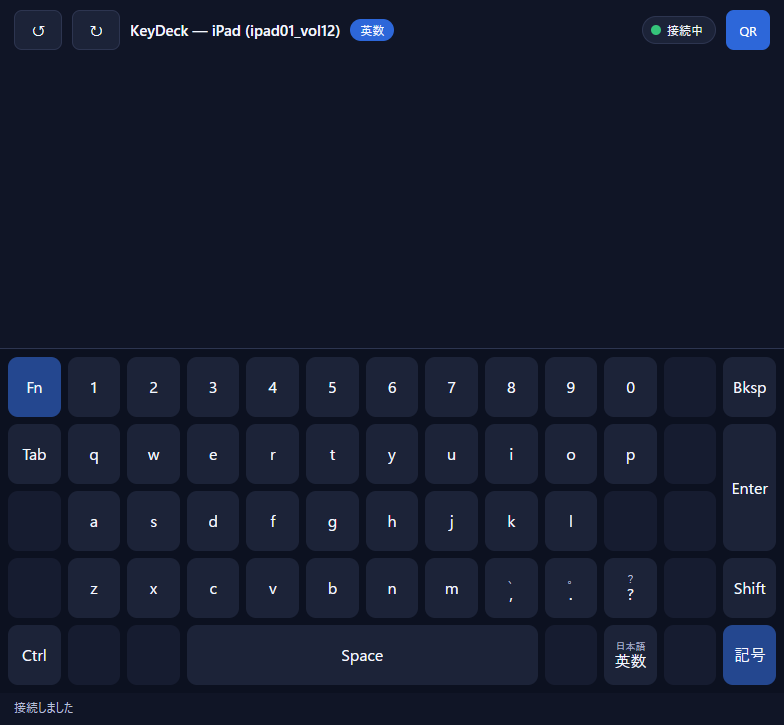
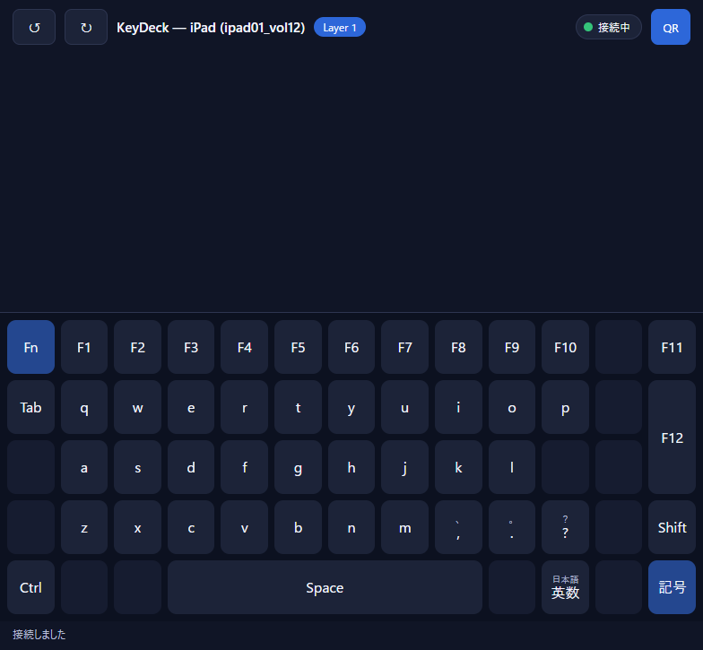

1. 押す前（実画面）

押す: K101
赤: 押す位置（Fn）。青: このあと変わる段。
押す前の詳細 →
型: bookmaker-diagram/v1.1（fig-06-01_fn_mo.json）／ 画面はすべて実際の /ipad 画面の撮影（2026-09-15、PC 上のヘッドレス Chrome）

key.pressAction::Mo { layer } => { let layer = *layer; match edge { Edge::Down => { state.momentary.insert(layer); // 状態が変わるのはこの1行 Resolved::LayerChanged // Fireではない＝入力なし } // …Up の枝は省略… }}crates/proto-keymap/src/lib.rs の resolve。Up の枝を省略し、日本語コメント2行を足した（説明用に簡略化）。LayerChangedlayer.state を配信
同じ /ipad 画面を1つ開いたまま撮影した。1段目は 1〜0、右上のバッジは 英数。
端末が送ったのは次の1通だけ。キーの意味（「レイヤー1にせよ」）は含まれていない。
{ "type": "key.press", "keyId": "K101", "edge": "down" }このメッセージは撮影中の画面からではなく、別の WebSocket 接続から送った。
crates/proto-hub/src/ws.rs。resolve を呼ぶ前の有効レイヤーを記録し、解決の結果と一緒にログへ1行書く。
key press chk="T3-3" surface=Ipad keymap_id="-" key_id="K101" edge=Down layers=0 outcome=layer-change
outcome=layer-change が「状態が変わった」。Windows へ送るときは outcome=key:A のように照合札が出る。
crates/proto-keymap/src/lib.rs。有効レイヤー {0} を大きい順に見て、レイヤー0に {"t":"mo","layer":1} を見つける。Down なので momentary に 1 を入れ、LayerChanged を返す。
state.momentary.insert(layer); が、この操作で Hub の状態を変える唯一の行。この枝は Fire を返さない。
有効レイヤー ＝ {0} ∪ momentary ∪ toggled。Down で momentary が [] → [1]、Up で [1] → [] に戻る。
layer state changed; broadcasting chk="T3-3" surface=Ipad wire=LayerStateWire { keymap_id: None, momentary: [1], toggled: [] }押した接続と撮影した画面は別の接続。それでも画面が変わったのは、Hub が同じ種類（Ipad）の画面すべてに状態を配ったから。
| 位置 | 押す前 | 押している間 | 理由 |
|---|---|---|---|
| 1段目 K102〜K111 | 1〜0 | F1〜F10 | レイヤー1に書かれている |
| K113 | Bksp | F11 | レイヤー1に書かれている |
| K213 | Enter | F12 | レイヤー1に書かれている |
| K101（Fn）・文字キー・Shift・Ctrl | そのまま | そのまま | レイヤー1に無いので、レイヤー0の意味を使う |
| バッジ | 英数 | Layer 1 | 配信された状態を描いた |
離したあと（Up）は押す前と同じ表示に戻った。ログは edge=Up layers=0,1 outcome=layer-change と momentary: []。
LayerChanged を受けた handle_key_press は broadcast_layer_state だけを呼び、fire_action を呼ばない。したがって adapter も SendInput も動かない。
| 操作 | Down の答え | Hub の状態 | 画面 | Windows 入力 |
|---|---|---|---|---|
| mo | LayerChanged | 変わる | 変わる | 出ない |
| key | Fire | 変わらない | 変わらない | 出る |
| tg.fire | FireAndLayerChanged | 変わる | 変わる | 出る |
| key.hold | Fire（Up でも Fire） | 変わらない | 変わらない | 押す／離すが出る |